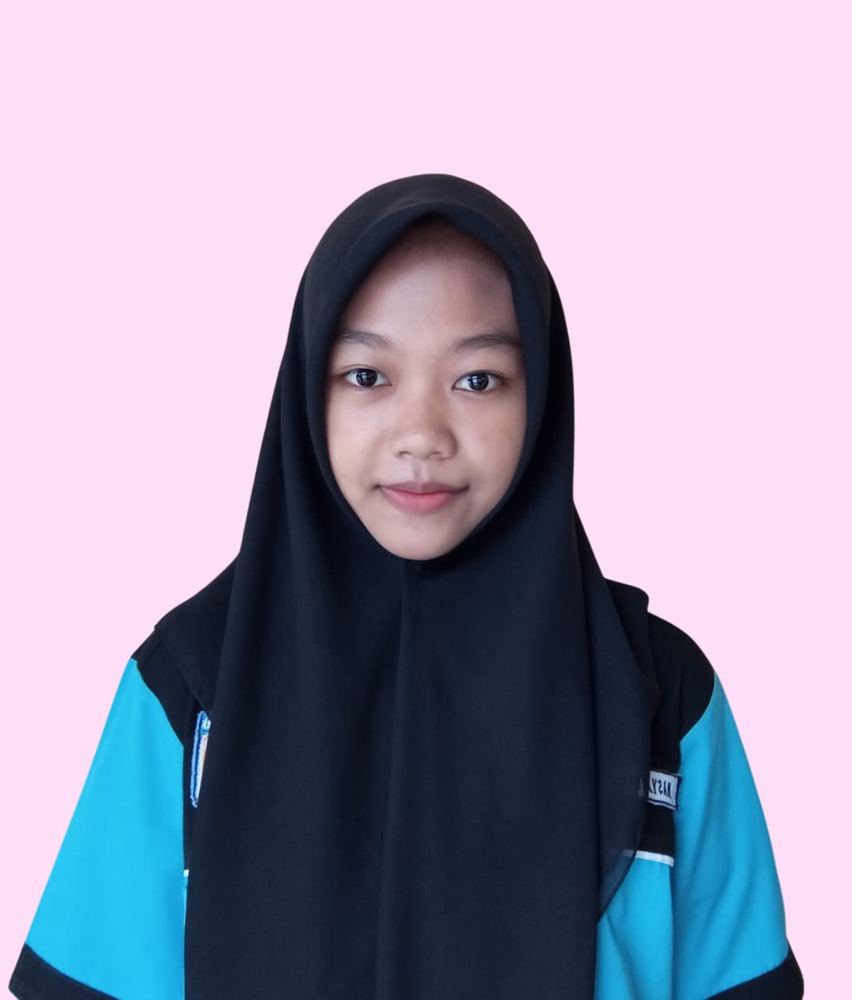

Saya seorang pelajar yang memiliki minat besar dalam pengembangan web dan desain UI/UX. Saya senang mempelajari cara membuat situs web yang fungsional sekaligus menarik secara visual. Saat ini, saya sedang mengembangkan keterampilan dalam HTML, CSS, JavaScript, dan berbagai framework front-end untuk menciptakan desain web yang modern dan responsif.
